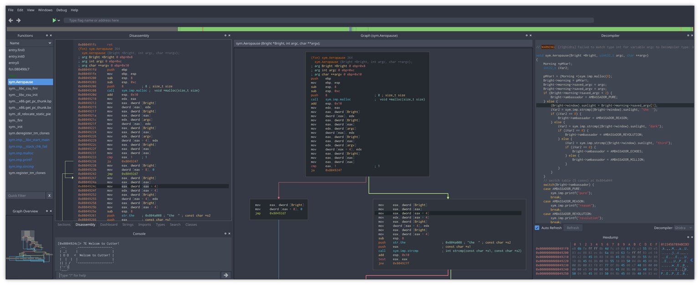
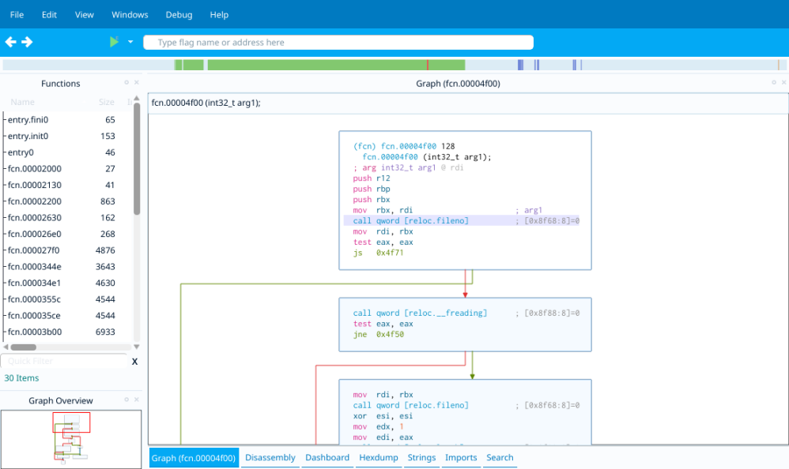
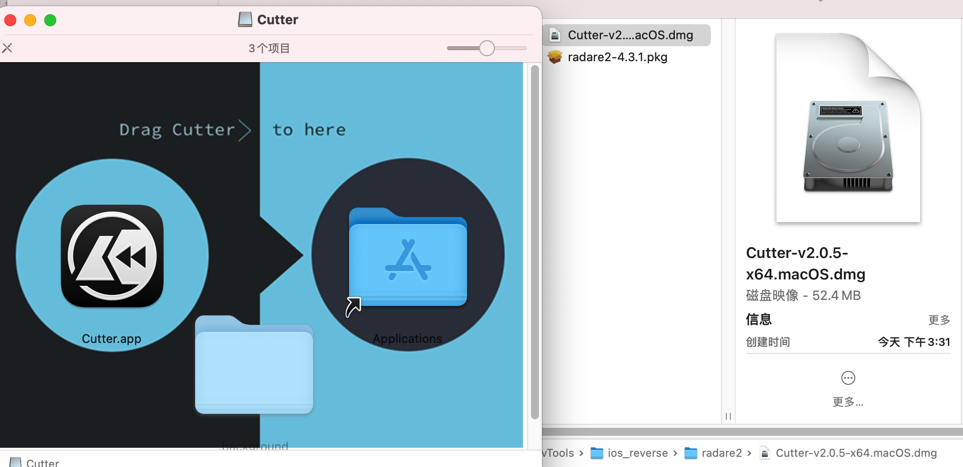
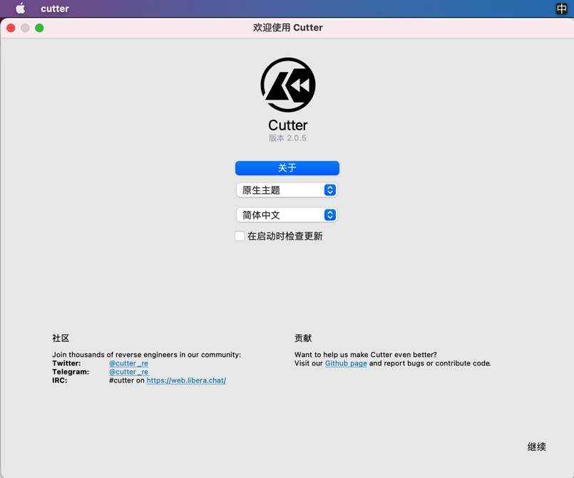
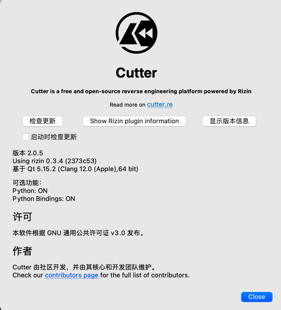

Cutter
Cutter- 一句话描述：（radare2的fork版）Rizin的GUI版本
- Free and Open Source RE Platform powered by radare2
- Cutter is the official UI for radare2 for Linux, macOS and Windows, it's written in C++ and uses the Qt
- 支持多平台
LinuxMacWindows
- 实现细节
C++语言写的- 前端：
QT
- 截图
- 
- 
- 特点
- 内置Ghidra decompiler
- 无需额外安装Java
- 用C++实现的，目的是性能更好
- 无需额外安装Java
- 内置Ghidra decompiler
- 核心功能和特点
- 开源 Open Source
- Completely FREE and licensed under GPLv3
- Decompiler
- Native integration of Ghidra's decompiler in Cutter releases
- Graph View
- Fully featured graph view as well as mini-graph for fast navigation
- Debugger
- Multiplatform native and remote debugger for dynamic analysis
- Disassembly
- Linear disassembly view
- Hex Editor
- View and modify any file with a rich and powerful Hex View
- Python Scripting Engine
- Quickly write python scripts to automate tasks
- Plugins
- Use Native or Python plugins to extend Cutter's core functionality
- Binary Patching
- Add, remove and modify bytes and instructions
- Emulation
- Great for automation, crypto algorithms and malware analysis
- Theme Editor
- Fully featured theme editor for easy and user-friendly customization of Cutter
- Modern & Customizable UI
- Built using Qt C++ and design best practices
- Integrated Radare2 Console
- Multi Language
- Binary Searching
- Types & Structs
- Syntax Highlighting
- STDIO Redirection
- Remote Debugging
- Kernel Debug
- Graph Overview
- 开源 Open Source
- 资料
- 官网
- Cutter
- GitHub
- radareorg/cutter: Free and Open Source Reverse Engineering Platform powered by radare2
- rizinorg/rizin: UNIX-like reverse engineering framework and command-line toolset.
- 官网
- 一句话描述：（radare2的fork版）Rizin的GUI版本
安装Cutter
Cutter官网点击Download，此处下载到：（之前某旧版本）
Cutter-v2.0.5-x64.macOS.dmg

双击，即可安装。
打开后，即可看到主界面：
- Cutter欢迎界面
- 
- Cutter的关于
- 